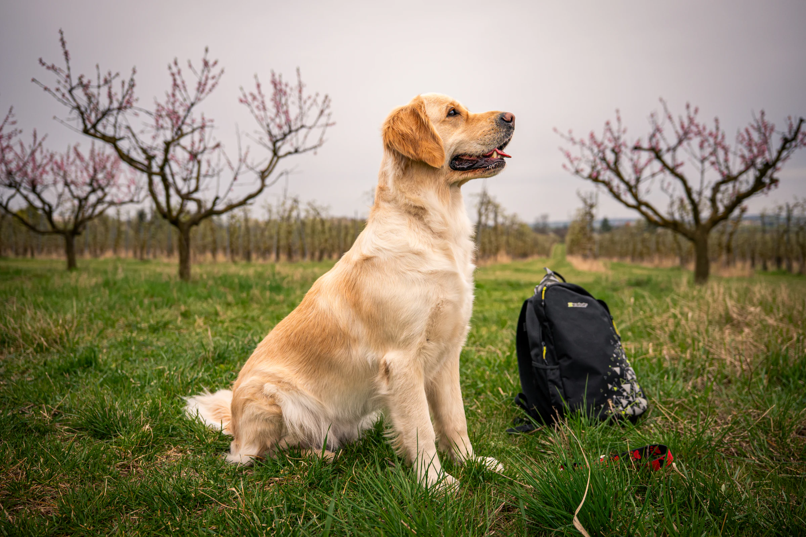

Připraveno
Další psy doplníme
Jakmile budou k dispozici údaje o dalších psech, přidáme sem jejich samostatné profily.
Psi
Přehled psů s důrazem na zdraví, povahu, typický exteriér a vhodnost pro plánovaná spojení.

Krycí pes
Vyrovnaný pes s laskavou povahou, pevným zdravím a krásným exteriérem.
Zobrazit profilPřipraveno
Jakmile budou k dispozici údaje o dalších psech, přidáme sem jejich samostatné profily.